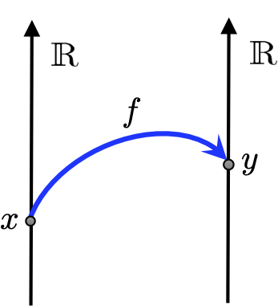
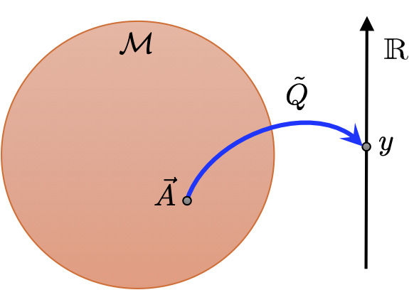
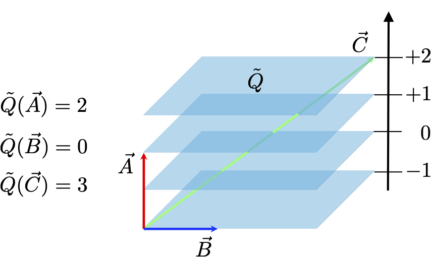

5 One-forms
In this lecture we will show how the geometrical structure of special relativity leads to new mathematical objects.
5.1 Scalar-product of 4-vectors
In the last lecture we stated that the length of a 4-vector \(||\vec{X}||\) is given by the space-time interval between \(O\) and \(X\) as: \[ ||\vec{X}||^2 = \Delta S^2(0,X). \] The representation of this 4-vector in frame \(S\) was packaged up into a column vector \[ {\underline X} = \left( \begin{array}{c} x^0 \\ x^1 \\ x^2 \\ x^3 \end{array}\right), \] and from \(S^2(0,X) = (x^0)^2 - (x^1)^2 - (x^2)^2 - (x^3)^2\) we got: \[ ||\vec{X}||^2 = {\underline X}^T\,\underline{\underline \eta}\,{\underline X}, \tag{5.1}\] using the metric \(\underline{\underline \eta} = {\rm diag}(1,-1,-1,-1)\). Converting Equation 5.1 into index notation gives: \[ ||\vec{X}||^2 = \eta_{\mu\nu}x^\mu x^\nu, \tag{5.2}\] where \(\eta_{\mu\nu} = [\underline{\underline \eta}]_{\mu\nu}\) is the metric. In another frame \(\bar S\) we have \[ ||\vec{X}||^2 = \eta_{\bar{\mu}\bar{\nu}}x^{\bar \mu} x^{\bar \nu}, \tag{5.3}\] where \(\eta_{\bar{\mu}\bar{\nu}} = [\underline{\underline \eta}]_{\bar{\mu}\bar{\nu}}\) takes its elements from the same matrix \(\underline{\underline \eta}\). This means that \[ \eta_{\bar{\alpha}\bar{\beta}} = \eta_{\mu\nu}\Lambda^{\mu}_{\bar \alpha}\Lambda^\nu_{\bar \beta}. \] as you are now invited to show.
In Euclidean 3D space we have a scalar (or dot) product which takes two 3-vectors \(\vec{a}\) and \(\vec{b}\) and returns a scalar: \[ \vec{a}\cdot\vec{b} = {\underline a}^{\rm T}{\underline b} = a_xb_x + a_yb_y + a_zb_z. \] which is symmetric in its arguments \(\vec{a}\cdot\vec{b} = \vec{b}\cdot\vec{a}\). The length of a vector is then a special case as \(||\vec{r}||^2 = \vec{r}\cdot\vec{r}\). So more generally we see that the orthogonality of rotations \(\underline{\underline R}^{\rm T}\underline{\underline R} = \mathbb{1}\) ensures the invariance of the scalar product: \[ \vec{a}\cdot\vec{b} = \bar{\underline a}^{\rm T}\bar{\underline b} = {\underline a}^{\rm T}\underline{\underline R}^{\rm T}\underline{\underline R}\,{\underline b} = {\underline a}^{\rm T}{\underline b}. \] Since \(\vec{a}\cdot\vec{b} = ||\vec{a}||\,||\vec{b}|| \cos(\phi)\) we see that rotations preserve not only the length but also the angle \(\phi\) between 3-vectors.
For 4-vectors \(\vec{A}\) and \(\vec{B}\) in Minkowski space-time we can similarly construct a scalar product as: \[ \vec{A}\cdot\vec{B} = \underline{A}^{\rm T}\,\underline{\underline \eta}\,{\underline B} = A^0B^0 - A^1B^1 - A^2B^2 - A^3B^3, \] which in index notation is \[ \vec{A}\cdot\vec{B} = \eta_{\mu\nu}A^\mu B^\nu. \tag{5.6}\] Again we see that \(\vec{A}\cdot\vec{B} = \vec{B}\cdot\vec{A}\) owing to the metric being diagonal and hence symmetric. We can easily confirm that the scalar product is Lorentz invariant based on knowing already that the length or space-time interval is. Take: \[ (\vec{A}+\vec{B})\cdot(\vec{A}+\vec{B}) = \vec{A}\cdot\vec{A} + \vec{B}\cdot\vec{B} + 2\vec{A}\cdot\vec{B}, \] where the lefthand side and all but the last term on the righthand side are lengths of 4-vectors, and hence invariant. This implies \(\vec{A}\cdot\vec{B}\) must be invariant also. This generalisation in Equation 5.6 is our first hint that if we have expressions involving the full contraction of all indices the resulting scalar is a Lorentz invariant. We will firm this conjecture up in the coming lectures. Finally, we see that the scalar product of our basis 4-vectors obeys: \[ \vec{e}_\mu \cdot \vec{e}_\nu = \eta_{\mu\nu}, \] reflecting their orthogonality and unit 4-vector nature.
5.2 Constructing one-forms
It is time for us to consider more closely what objects possess components that are lower indices. To start we observe that the set of all 4-vectors \(\vec{X}\) in Minkowski space-time form a vector space \(\mathcal{M}\). What this means formally is that 4-vectors obey the axioms of a vector space. Recall a vector space \(\mathcal{M}\) over reals \(\mathbb{R}\) is a set equipped with two operations, vector addition and scalar multiplication, that satisfy the following axioms:
- Closure under addition: For all \(\vec{u}, \vec{v} \in \mathcal{M}\), the sum \(\vec{u} + \vec{v} \in \mathcal{M}\).
- Associativity of addition: For all \(\vec{u}, \vec{v}, \vec{w} \in \mathcal{M}\), \((\vec{u} + \vec{v}) + \vec{w} = \vec{u} + (\vec{v} + \vec{w})\).
- Commutativity of addition: For all \(\vec{u}, \vec{v} \in \mathcal{M}\), \(\vec{u} + \vec{v} = \vec{v} + \vec{u}\).
- Existence of additive identity: There exists an element \(\vec{0} \in \mathcal{M}\) such that for all \(\vec{v} \in \mathcal{M}\), \(\vec{v} + \vec{0} = \vec{v}\).
- Existence of additive inverse: For each \(\vec{v} \in \mathcal{M}\), there exists an element \(-\vec{v} \in \mathcal{M}\) such that \(\vec{v} + (-\vec{v}) = \vec{0}\).
- Closure under scalar multiplication: For all \(a \in \mathbb{R}\) and \(\vec{v} \in \mathcal{M}\), the product \(a\vec{v} \in \mathcal{M}\).
- Associativity of scalar multiplication: For all \(a, b \in \mathbb{R}\) and \(\vec{v} \in \mathcal{M}\), \(a(b\vec{v}) = (ab)\vec{v}\).
- Distributivity of scalar multiplication with respect to vector addition: For all \(a \in \mathbb{R}\) and \(\vec{u}, \vec{v} \in \mathcal{M}\), \(a(\vec{u} + \vec{v}) = a\vec{u} + a\vec{v}\).
- Distributivity of scalar multiplication with respect to field addition: For all \(a, b \in \mathbb{R}\) and \(\vec{v} \in \mathcal{M}\), \((a + b)\vec{v} = a\vec{v} + b\vec{v}\).
- Existence of multiplicative identity: For all \(\vec{v} \in \mathcal{M}\), \(1\vec{v} = \vec{v}\), where \(1\) is the multiplicative identity in \(\mathbb{R}\).
The crucial axioms are the ones giving closure 1. and 6., while the rest just establish sensible behaviour of the two operations.
Next consider an ordinary function \(f(x)\) which takes a scalar \(x\) and maps it to another scalar \(y\), so \[ f:x\in\mathbb{R} \mapsto y \in \mathbb{R}, \] as depicted in this figure:

Now suppose we want an object that \(\tilde{Q}(\vec{A})\) that maps a 4-vector \(\vec{A}\) to scalar \(a \in \mathbb{R}\) as: \[ \tilde{Q}:\vec{A}\in\mathcal{M} \mapsto a \in \mathbb{R}. \] As this object acts on a non-scalar input it is called a functional and we will distinguish it from an ordinary function with a \(\tilde{\cdot}\) above its symbol. Similar to a function we can depict a one-form like this:

We can define the scalar multiplication by \(\alpha \in \mathbb{R}\) of a functional \(\tilde{Q}\) and a new functional \(\tilde{R} = \alpha\tilde{Q}\) whose output \(\tilde{R}(\vec{A}) = \alpha\tilde{Q}(\vec{A})\) is the multiplication of the output of \(\tilde{Q}\) by \(\alpha\). We can also define the addition of \(\tilde{Q}\) with another functional \(\tilde{P}\) as a new functional \(\tilde{R} = \tilde{Q} + \tilde{P}\) whose output \(\tilde{R}(\vec{A}) = \tilde{Q}(\vec{A}) + \tilde{P}(\vec{A})\) is the sum of the outputs of \(\tilde{Q}\) and \(\tilde{P}\). We thus have the basic ingredients needed for constructing another vector space from functionals.
Before proceeding we restrict our considerations to linear functionals. This means, like ordinary functions, they obey following: \[ \begin{align} \tilde{Q}(\alpha\vec{A}) &= \alpha\tilde{Q}(\vec{A}), \\ \tilde{Q}(\vec{A}+\vec{B}) &= \tilde{Q}(\vec{A}) + \tilde{Q}(\vec{B}). \end{align} \] The set of all linear functionals on \(\mathcal{M}\) thus form a new vector space \(\mathcal{M}^*\) called the dual vector space of \(\mathcal{M}\).
Vector spaces and their duals will not be entirely new concepts to you. In linear algebra the set of row vectors forms a dual space to the set of column vectors. Row vectors are linear functionals acting on column vectors via left multiplication. Similarly, in quantum mechanics bras \(\langle \psi| \in \mathcal{H}^*\) are the duals of kets \(|\psi\rangle \in \mathcal{H}\), where \(\mathcal{H}\) is the complex linear vector space or Hilbert space of the system.
We will call the vectors in the dual space \(\mathcal{M}^*\) one-forms. This name comes from deeper differential geometry which will only touch upon in this course. What is crucial here is that one-forms, like 4-vectors, are abstract geometrical objects. We will denote one-forms using the \(\tilde{\cdot}\) functional notation.
Since one-forms are linear functionals we can entirely characterise their behaviour by acting them on basis 4-vectors. Specifically, the components of \(\tilde{Q}\) are extracted as: \[ Q_\mu = \tilde{Q}(\vec{e}_\mu), \] where we note that they possess a lower index inherited from the basis 4-vector. Given these components we can then construct the action of \(\tilde{Q}\) on any input 4-vector \(\vec{A}\) as: \[ \tilde{Q}(\vec{A}) = \tilde{Q}(A^\mu\vec{e}_\mu) = A^\mu\tilde{Q}(\vec{e}_\mu) = A^\mu Q_\mu. \] The lefthand side of the above equation is a scalar formed from geometrical objects. It has to be Lorentz invariant, while the far righthand side is the calculation of this scalar from components in a particular frame \(S\). Indeed geometrically a one-form can be viewed as a sequence of surfaces in space-time, while a 4-vector is an arrow. The scalar value of \(\tilde{Q}(\vec{A})\) then has a geometrical interpretation as the number of \(\tilde{Q}\) surfaces pierced by \(\vec{A}\), as depicted here:

Naturally, the next question is how do the components of one-forms transform between frames. This is answered easily by inserting the transformation for basis 4-vectors as: \[ \tilde{Q}(\vec{e}_\mu) = Q_\mu = \tilde{Q}(\Lambda^{\bar \nu}_\mu\vec{e}_{\bar \nu}) = \Lambda^{\bar \nu}_\mu\tilde{Q}(\vec{e}_{\bar \nu}) = \Lambda^{\bar \nu}_\mu Q_{\bar \nu}. \] Inverting this expression gives: \[ Q_{\bar \nu} = \Lambda^{\mu}_{\bar \nu} Q_{\mu}, \] where we see that the components of one-forms transform oppositely to those of 4-vectors. In fact they transform the same way as the basis 4-vectors themselves which is why you may see them referred to as covariant vectors, while 4-vectors are correspondingly referred to as contravariant vectors. We won’t use this old-fashioned language in this course.
By transforming oppositely to 4-vectors it ensures that \(\tilde{Q}(\vec{A})\) is a Lorentz invariant. This is confirmed by computing: \[ \begin{align} \tilde{Q}(\vec{A}) &= Q_{\bar \nu} A^{\bar \nu}, \\ &= \left(\Lambda^{\mu}_{\bar \nu} Q_{\mu}\right)\left(\Lambda^{\bar \nu}_{\alpha} A^\alpha\right), \\ &= \left(\Lambda^{\mu}_{\bar \nu}\Lambda^{\bar \nu}_{\alpha}\right)Q_\mu A^\alpha, \\ &= \delta^\mu_\alpha Q_\mu A^\alpha, \\ &= Q_\mu A^\mu, \end{align} \] where the expression of \(\tilde{Q}(\vec{A})\) in frame \(\bar S\) is transformed into its equivalent expression in frame \(S\). What is computed here is called the contraction of a one-form with a 4-vector.
Given we have components \(Q_\mu\) of a one-form \(\tilde{Q}\) we should specify what they are the expansion coefficients of. We expect there should be some basis one-forms in \(\mathcal{M}^*\) which reconstruct the one-form as: \[ \tilde{Q} = Q_\mu \tilde{e}^\mu. \] Reconsidering \(\tilde{Q}(\vec{A})\) we find that \[ \tilde{Q}(\vec{A}) = Q_\mu\tilde{e}^\mu(A^\nu\vec{e}_\nu) = Q_\mu A^\nu\tilde{e}^\mu(\vec{e}_\nu) \overset{?}{=} A^\mu Q_\mu. \] The final equality only applies if \(\tilde{e}^\mu(\vec{e}_\nu) = \delta^\mu_\nu\). This relation is called biorthonormality of the one-form basis generated by the 4-vector basis. We can then guess that basis one-forms transform between frames as: \[ \tilde{e}^{\bar \mu} = \Lambda^{\bar \mu}_\nu \tilde{e}^{\nu}, \] so they transform identically to the components of 4-vectors, as expected due to the upper index they possess.
The duality between \(\mathcal{M}\) and \(\mathcal{M}^*\) means we can equally view 4-vectors as linear functionals of one-forms as \(\vec{A}(\tilde{Q})\). This suggests we should introduce a more symmetrical notation for their contraction as: \[ \langle \tilde{Q}, \vec{A} \rangle = \tilde{Q}(\vec{A}) = \vec{A}(\tilde{Q}), \] and components follow as \(A^\mu = \vec{A}(\tilde{e}^\mu) = \langle \tilde{e}^\mu, \vec{A} \rangle\) and \(Q_\mu = \tilde{Q}(\vec{e}_\mu) = \langle \tilde{Q}, \vec{e}_\mu \rangle\).
Given one-forms are memebers of a dual vector space \(\mathcal{M}^*\) we expect they should also have their own scalar-product defining the length of a one-form and orthogonality between them. Moreover, this scalar-product should be a Lorentz invariant quantity. Analogous with 4-vectors we can define the scalar-product between two one-forms \(\tilde{Q}\) and \(\tilde{P}\) as \[ \tilde{Q}\cdot\tilde{P} = Q_0P_0 - Q_1P_1 - Q_2P_2 - Q_3P_3 = \eta^{\mu\nu}Q_\mu P_\nu, \tag{5.7}\] where \(\eta^{\mu\nu} = [\underline{\underline \eta}]_{\mu\nu}\) has elements derived from the same \(\underline{\underline \eta}\) matrix used above in the section Scalar-product of 4-vectors earlier. The proof that Equation 5.7 is Lorentz invariant is identical to that earlier for 4-vectors just with \(\underline{\underline \Lambda}\) replaced with \(\underline{\underline \Lambda}^{-1}\).
5.3 Fields and their space-time derivatives
This course is about fields. Mathematically we can view the simplest possible field as a general Lorentz scalar functional \(\tilde{\varphi}(\vec{X})\) of the space-time points specified by a 4-vector \(\vec{X}\). By formally being a functional of the geometrical object \(\vec{X}\) we are making it clear the field is not tied to any particular reference frame. In any given frame \(S\) in which \(\vec{X}\) has components \(x^\mu\) the field can be considered a function of these components: \[ \tilde{\varphi}(\vec{X}) \overset{S}{\rightarrow} \varphi(x^0,x^1,x^2,x^3) = \varphi(x^\mu) = \varphi(x) \] There are a couple of notations introduced above which need explaining. First, ocassionally it is useful to write \(\varphi(x^\mu) = \varphi(x^0,x^1,x^2,x^3)\). This is a slight abuse of our index notation since \(\mu\) here is a shorthand for \(\varphi\) being a function of all components in frame \(S\). It is not a free index which participates in any index manipulations outside of the argument parentheses of \(\varphi\). Second, for brevity we will also just write \(\varphi(x) = \varphi(x^0,x^1,x^2,x^3)\), and it should be clear from the context when we mean this or just the coordinate along the \(x\)-axis (see the example below). This notation is useful when we want to find the function that represents \(\varphi\) in another frame \(\bar S\). We use that the value of \(\varphi\) at any point \(\vec{X}\) is unchanged as: \[ \tilde{\varphi}(\vec{X}) \overset{S}{\rightarrow} \varphi(x^\mu) = \varphi(\Lambda^{\mu}_{\bar \nu} x^{\bar \nu}) = \bar{\varphi}(x^{\bar \nu}). \] What we have done in these steps is to take the function \(\varphi(x^\mu)\) in \(S\) and then perform an inverse Lorentz transformation on its arguments (nicely handled by the index \(\mu\)) to convert them into components in frame \(\bar S\). We then identify this with the function \(\bar{\varphi}(x^{\bar \nu})\) describing the field in \(\bar S\). A \(\bar{\circ}\) is put on the function as well to make it clear it is in general a different function of the components in \(\bar S\) than \(\varphi\) and not just the same function with its \(x^\mu\) arguments replaced with \(x^{\bar \nu}\). The transformations of functions between reference frames was discussed earlier in Principle of relativity. In short we see that \(\varphi(x) = \bar{\varphi}(\bar{x})\).
Let’s consider a concrete example to illustrate the transformation of fields in 1+1D. Suppose we have a field specified by the following function : \[ \varphi(ct,x) = {\rm Re}\{\tan^{-1}(x + i ct)\}. \tag{5.8}\] This is plotted in frame \(S\) in the left panel of Figure 5.1. If we then insert the inverse Lorentz transformation from \(S\) to \(\bar S\) we then get: \[ \begin{align} \bar{\varphi}(c\bar{t},\bar{x}) &= {\rm Re}\left\{\tan^{-1}\left(\gamma(\beta)\bar{x} + \beta\gamma(\beta)c\bar{t} + i\gamma(\beta)c\bar{t} + i\beta\gamma(\beta)\bar{x}\right)\right\}. \\ &= {\rm Re}\left\{\tan^{-1}\left(\gamma(\beta)(1+ i\beta)\bar{x} + i\gamma(\beta)(1-i\beta)c\bar{t}\right)\right\}. \end{align} \tag{5.9}\] What is clear here is that \(\bar{\varphi}(c\bar{t},\bar{x})\) is a different function of its arguments compared to \(\varphi(ct,x)\) owing to the complex factors \(\gamma(\beta)(1 \pm i\beta)\). As can be seen in the right panel of Figure 5.1 the new function \(\bar{\varphi}(c\bar{t},\bar{x})\) appears distorted since the \(ct\) and \(x\) axes of \(S\) are rotated by \(\tan(\beta)\) in \(\bar S\). Nonetheless the value of the field at any given point in space-time is completely unchanged and agreed upon by both frames. Take the point \(\vec{X}\) labelled in Figure 5.1 which has coordinates in \(S\): \[{\bf X} = \left( \begin{array}{c} 2\\ \pi/2 \end{array}\right). \] Evaluating the field using Equation 5.8 gives \(\varphi(\vec{X}) = \varphi({\bf X}) = 1.31\). Lorentz transforming to \(\bar S\) then gives coordinates for \(\vec{X}\) as: \[\bar{{\bf X}} = \left( \begin{array}{c} 1.50\\ 0.84 \end{array}\right). \] Evaluating the field using Equation 5.9 gives \(\varphi(\vec{X}) = \bar{\varphi}(\bar{\bf X}) = 1.31\), as it must.
One of the most important and basic properties of a field that we will repeatedly need to compute is its derivative in space-time. Formally, we compute this by considering the field at two nearby points \(\vec{X}\) and \(\vec{X}+\delta\vec{X}\) where \(\delta\vec{X}\) is a small 4-vector connecting the points, as shown in Figure 5.2. We then proceed to compute the Taylor expansion of the field \(\varphi\) about the point \(\vec{X}+\delta\vec{X}\) as: \[ \varphi(x^\mu+\delta x^\mu) = \varphi(x^\mu) + \sum_{\nu=0}^3\delta x^\nu \left.\frac{\partial \varphi}{\partial x^\nu}\right|_{\vec{X}} + \mathcal{O}(\delta x^2). \tag{5.10}\] Now the first term \(\varphi(x^\mu)\) is a Lorentz scalar since it is the field itself. However, we are uncertain at this point what the status of the second term is, which is the reason we have written the sum out explicitly. We know the entire Taylor series should be Lorentz scalar but we don’t know off hand that every term is a Lorentz scalar.
Now, we do know that \(\delta x^\nu\) is a valid 4-vector but what type of object is the derivative of the field? We would like to identify it as a bonifide one-form \[ K_\nu = \frac{\partial \varphi}{\partial x^\nu}, \] since then the second term is a contraction \(\delta x^\nu K_\nu\), using Einstein summation convention, is a manifestly a Lorentz scalar also.
To determine whether \(K_\nu\) is a one-form we have to establish how it transforms between frames. For this we use the chain-rule to establish the relation between partial derivatives in different frames as \[ \frac{\partial}{\partial x^\mu} = \Lambda^\bar{\nu}_\mu \frac{\partial}{\partial x^\bar{\nu}}. \tag{5.11}\]
Suppose we have function \(f(x,y)\) in term of two variables \(x\) and \(y\). We also have two other variables \(r\) and \(s\) in which we can express the original variables in terms of as \(x(r,s)\) and \(y(r,s)\). Subsitution into \(f\) gives this function in terms of the new variables \(f(r,s) = f(x(r,s),y(r,s))\). The chain-rule allows us to connect derivatives in \(r,s\) with those in \(x,y\) and the transformation connecting them as \[ \frac{\partial f(r,s)}{\partial r} = \frac{\partial f(x,y)}{\partial x} \frac{\partial x(r,s)}{\partial r} + \frac{\partial f(x,y)}{\partial y} \frac{\partial y(r,s)}{\partial r}, \] and \[ \frac{\partial f(r,s)}{\partial s} = \frac{\partial f(x,y)}{\partial x} \frac{\partial x(r,s)}{\partial s} + \frac{\partial f(x,y)}{\partial y} \frac{\partial y(r,s)}{\partial s}. \] This can expressed as \[ \left(\begin{array}{c} \frac{\partial}{\partial r} \\ \frac{\partial}{\partial s} \end{array}\right)f = \left(\begin{array}{cc} \frac{\partial x}{\partial r} & \frac{\partial y}{\partial r} \\ \frac{\partial x}{\partial s} & \frac{\partial y}{\partial s} \end{array}\right) \left(\begin{array}{c} \frac{\partial}{\partial x} \\ \frac{\partial}{\partial y} \end{array}\right)f, \] where the \(2\times 2\) matrix is the Jacobian \(\bf J\) for this coordinate transformations. This expression can be generalised readily to coordinates \(x^\mu\) in frame \(S\) and \(x^\bar{\nu}\) in frame \(\bar{S}\) in \(1+3\) space-time as \[ \frac{\partial}{\partial x^\mu} = \sum_{\nu=0}^3 \frac{\partial x^\bar{\nu}}{\partial x^\mu} \frac{\partial}{\partial x^\bar{\nu}}. \] The crucial observation here is that the Lorentz transformation is linear (as we argued earlier in Principle of relativity on general grounds) as \[ x^\bar{\nu} = \Lambda^\bar{\nu}_\mu x^\mu, \] hence we immediately see that \[ \frac{\partial x^\bar{\nu}}{\partial x^\mu} = \Lambda^\bar{\nu}_\mu, \] so we have \[ \frac{\partial}{\partial x^\mu} = \Lambda^\bar{\nu}_\mu \frac{\partial}{\partial x^\bar{\nu}}, \] as claimed.
Using Equation 5.11 we see that \[ \frac{\partial \varphi}{\partial x^\nu} = \Lambda^\bar{\nu}_\mu \frac{\partial \varphi}{\partial x^\bar{\nu}}, \] \[ K_\mu = \Lambda^\bar{\nu}_\mu K_\bar{\nu}, \] hence confirming that \(K_\mu\) does indeed transform exactly like a one-form.
More generally, we can identify Equation 5.11 as defining a one-form differential operator which we write more compactly as \[ \partial_\mu = \frac{\partial}{\partial x^\mu}, \quad {\rm and} \quad \partial_\bar{\nu} = \frac{\partial}{\partial x^\bar{\nu}}, \] so Equation 5.11 becomes the form we will use from now on \[ \partial_\mu= \Lambda^\bar{\nu}_\mu \partial_\bar{\nu}. \tag{5.12}\] Returning to Equation 5.10 we have \[ \varphi(x^\mu+\delta x^\mu) = \varphi(x^\mu) + \delta x^\nu \left.\partial_\nu \varphi\right|_{\vec{X}} + \mathcal{O}(\delta x^2). \] which we can identify a familiar first principles expression for the derivative of the field at point \(\vec{X}\) as \[ \left.\partial_\nu \varphi\right|_{\vec{X}} = \lim_{\delta x \rightarrow 0}\frac{\varphi(x^\mu+\delta x^\mu) - \varphi(x^\mu)}{\delta x^\mu}. \] In frame \(S\) the one-form \(\partial_\mu\) can be written as \[ \partial_\mu = \left(\begin{array}{c} \frac{1}{c}\frac{\partial}{\partial t} \\ \nabla \end{array}\right), \] from which it is clear that the 4-vector version of it is \[ \partial^\mu = \eta^{\mu\nu}\partial_\nu = \left(\begin{array}{c} \frac{1}{c}\frac{\partial}{\partial t} \\ -\nabla \end{array}\right). \] The negative sign on the 4-vector components points to the derivative being a natural one-form.
Finally, we can contract the one-form and 4-vector derivative to get a Lorentz scalar differential operator \[ \partial_\mu\partial^\mu = \frac{1}{c^2}\frac{\partial}{\partial t^2} -\nabla^2, \] which is of such crucial importance for our work to come that it is named the d’Alembert operator. Indeed the wave equation can now be expressed very succinctly as \[ \partial_\mu\partial^\mu \varphi = 0, \] where its relativistic covariance is now completely apparent.